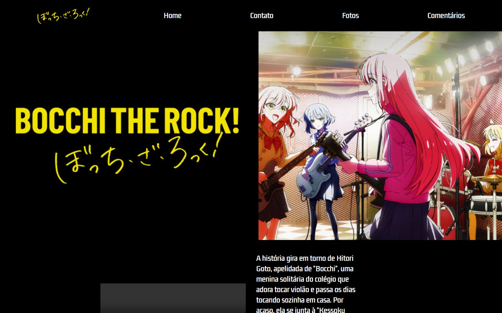
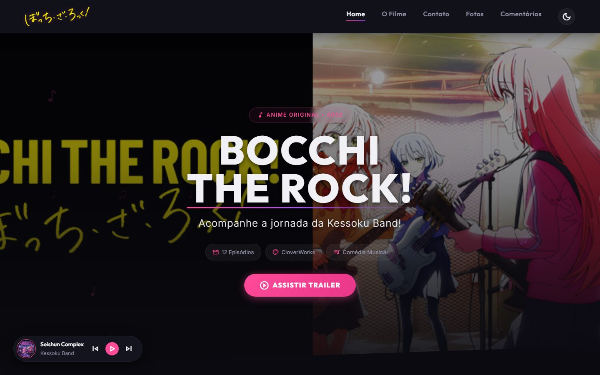
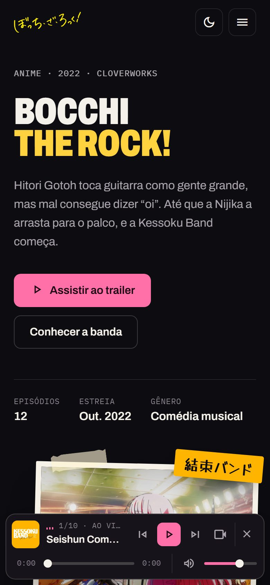
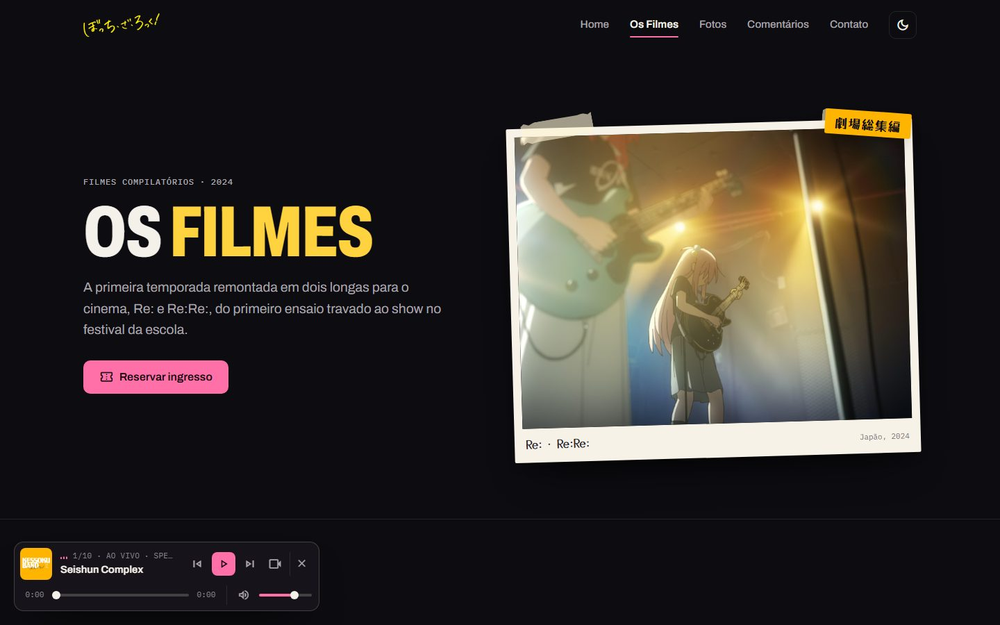
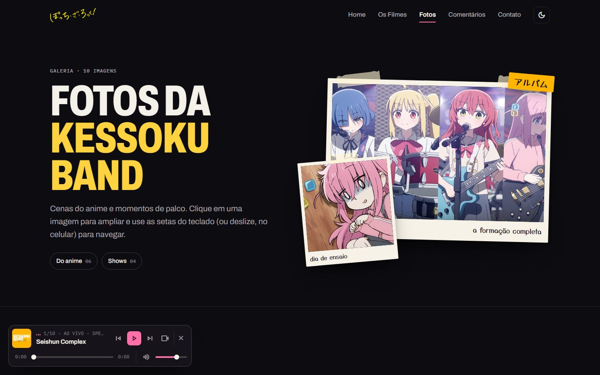
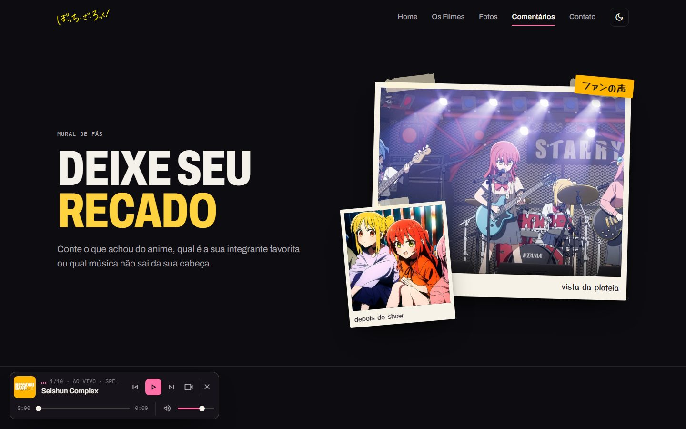

Estudo de caso 03 · Fan site
Bocchi The Rock!
Um site de fã interativo, refeito do zero em 2026: identidade inspirada em flyers de casa de show e componentes acessíveis em JavaScript puro.
- Meu papel
- Redesign de UI/UX e desenvolvimento front-end
- Equipe
- Individual na versão de 2026
- Período
- 2023 (curso) · 2026 (refatoração)
- Status
- No ar, na Vercel
- Stack
- HTML, CSS e JavaScript puro

Contexto e objetivo
O site nasceu em 2023 como exercício de um curso de front-end, com o professor Paulo Borges. Em 2026 refiz o projeto por completo (design, arquitetura e interatividade) para praticar desenvolvimento web moderno sem frameworks: nenhuma dependência além de HTML, CSS e JavaScript.
É um projeto de fã, sem fins lucrativos.
Ponto de partida
A primeira versão no repositório era uma página com logo, imagem e texto, mais páginas de contato, fotos e comentários. O objetivo da refatoração foi dar ao site uma identidade própria, mais interação e uma base acessível e organizada.
Meu papel
A versão de 2026 é individual: o redesign da interface, a organização do CSS em um design system e os componentes interativos.
Identidade e tokens
A estética parte de flyers de casa de show: paleta tirada das quatro integrantes da
banda, cores chapadas, layout assimétrico e detalhes em japonês. O tema claro usa um fundo cor de
papel. Tudo isso vive em variáveis CSS no global.css.
--kb-pink
#ff6fa8
Hitori · destaque principal
--kb-blue
#6b9bff
Ryo
--kb-yellow
#ffd23f
Nijika · título do hero
--kb-red
#ff6257
Kita
--kessoku
#ffb400
Amarelo da banda
--bg
#0d0c10
Fundo do tema escuro
Archivo
Títulos condensados e texto, com eixo de largura
IBM Plex Mono
Rótulos, metadados e contadores
Yusei Magic
Nomes e etiquetas em japonês
Experiência
Hero editorial
Título em tipografia condensada e uma colagem de fotos impressas com fita adesiva, legenda escrita à mão e adesivos em japonês.
Cards de personagens
Cada integrante com cor própria e nome em japonês na vertical. A bio aparece no hover e no foco, e fica sempre visível em telas de toque; no celular, vira um carrossel com scroll-snap.
Simulador de ingressos
Datas geradas a partir do dia atual, resumo da sessão em tempo real e confirmação sem recarregar a página.
Galeria acessível
Lightbox com foco preso no modal, navegação por teclado, swipe no celular e contador.
Mural de comentários
Sistema no navegador com proteção contra XSS, avaliação por estrelas, avatares coloridos e horários relativos.
Mini player
Toca as músicas da Kessoku Band pela API do YouTube, com controles sempre visíveis, e continua a música ao trocar de página.
Tema claro e escuro
Aplicado antes da primeira pintura, sem "flash", e com a preferência salva.
Contato
Perguntas frequentes em acordeão e formulário com validação inline e contador de caracteres.
Decisões técnicas
| Tecnologia | Uso no projeto |
|---|---|
| HTML | Estrutura semântica, com ARIA nos componentes interativos. |
| CSS | Flexbox, Grid, custom properties, clamp() e animações; um global.css como design system e um arquivo por página. |
| JavaScript puro | Manipulação do DOM, IntersectionObserver, lightbox e sanitização contra XSS, sem framework nem jQuery. |
| YouTube IFrame API | Mini player com os vídeos oficiais. |
| Service worker | Cache offline e manifesto de PWA. |
| Google Fonts e Material Symbols | Tipografia e iconografia. |
- Acessibilidade: navegação por teclado,
focus-visible, ARIA nos componentes e respeito aprefers-reduced-motion. - Responsividade: menu lateral no celular, layouts que se reorganizam em colunas e nenhum overflow horizontal.
Evolução
O histórico do repositório registra o caminho de uma versão para outra. Três momentos, capturados a partir dos próprios commits:

Mar. 2026
Alpha
Primeiro commit: logo, imagem e texto.

Abr. 2026
Beta 3.1
Novas páginas, chips de informação e mini player.
Out. 2026
V1.0
Depois do commit "Redesign completo da interface (UI/UX)".
Protótipos
Protótipo em organização
Os arquivos do Figma deste projeto estão sendo organizados. Quando publicados, aparecem aqui ao lado das telas implementadas.
Estado atual
No ar em projetositebocchi.vercel.app, com as páginas Home, Os filmes, Fotos, Comentários e Contato, além de uma página 404.
Todas as imagens e marcas de Bocchi The Rock! pertencem aos detentores de direitos (Aniplex, CloverWorks e Aki Hamaji).
Registros
Telas
Capturas do site publicado, feitas em outubro de 2026.



